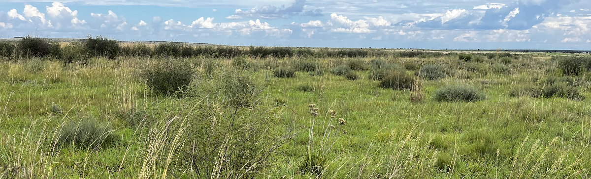
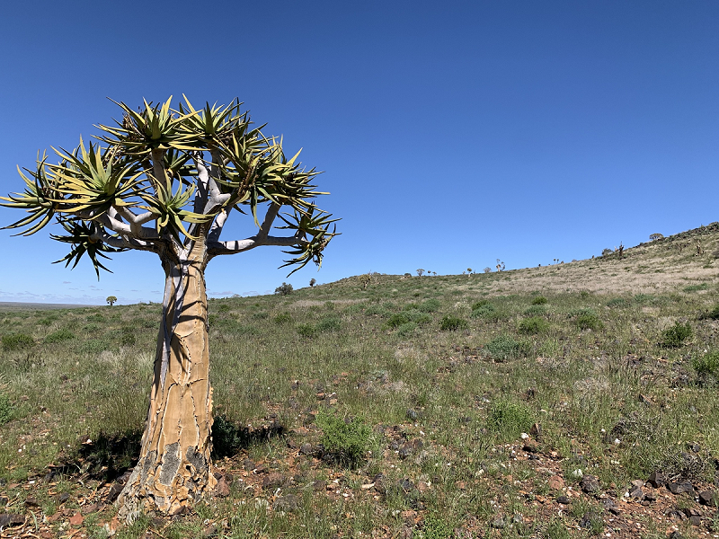

![]()
The ecosystem units for terrestrial ecosystem assessments in the NBA 2025 are based on The vegetation of South Africa, Lesotho and Swaziland – version 20241,2.
This digital map, underpinned by numerous publications, delineates and describes 463 national vegetation types nested within nine terrestrial biomes3.
Click on map to enlarge ».
{kind=link}
The moist, winter-rainfall region in the southwest of the country is home to the unique Fynbos biome. Adjacent to this lies the Succulent Karoo biome, an arid winter-rainfall biome with the highest diversity of succulent plants in the world. The Nama-Karoo biome covers the arid, summer-rainfall, central interior of the country. The Savanna biome dominates the northern and eastern summer rainfall regions of South Africa, and is the largest biome in Africa. The Grassland biome occurs mostly on the cooler high-lying central plateau and has high levels of plant endemism. The Albany Thicket biome occurs in the eastern and southern Cape and contains a unique combination of plant forms with an Eocene origin and unique evolutionary history4. The Forest biome is characterised by small patches distributed across the winter and summer rainfall areas of the country. The Indian Ocean Coastal Belt biome represents the southernmost extent of the moist tropical seaboard of East Africa. The Desert biome occupies a small portion of the extreme northwest of the country, forming the southernmost extent of the Namib Desert.

The vegetation map reflects the historical extent of the vegetation prior to major anthropogenic land conversion (ca. 1750). By estimating and mapping the extent and state of our natural ecosystems before large-scale human modifications we establish a baseline against which the state and extent of ecosystems can be monitored. In South Africa we have a wealth of information that allows for the approximation of historical extent5,6. The arid and mountainous character of much of South Africa also means that many landscapes have not seen extensive habitat loss - making estimation of historical extent feasible.

Data availability
The terrestrial ecosystem map is part of a family of ecosystem maps for the country (Figure 2). Together these maps and classifications form the South African National Ecosystem Classification System or SA-NECS7.
- Terrestrial Ecosystem Map (National Vegetation Map) (the 2024 version used in NBA 2025)
- Marine Ecosystem Map
- Inland Aquatic Ecosystem Maps
- Estuarine Ecosystem Map
- Integrated Coastal Ecosystem Map

Recommended Citation
Dayaram, A. & Skowno, A.L. 2025. Ecosystem types: Terrestrial realm. National Biodiversity Assessment 2025. South African National Biodiversity Institute. http://nba.sanbi.org.za/.
